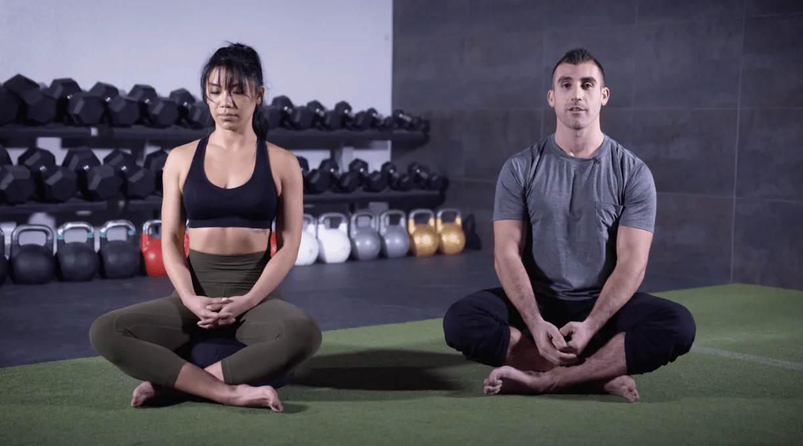
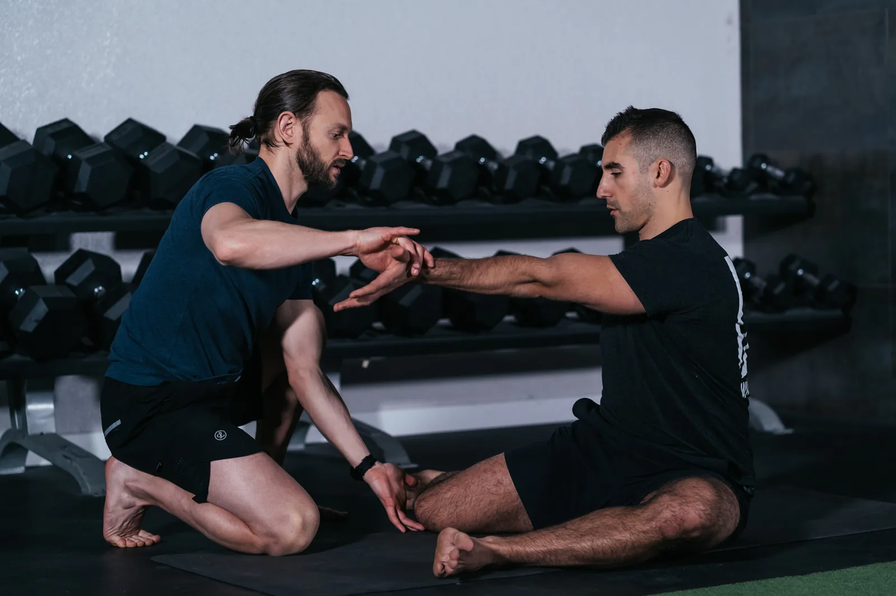

B110 · Important Update: Kettlebell Lifestyle
{first_name},
You’re receiving this email because Kettlebell Lifestyle is right around the corner. I’m so excited you are joining this movement, and I want to welcome you properly! : )
Upon getting access, from the initial videos and intro questionnaire, you’ll see just how different this course is.
I could have spent 1/10th the amount of time creating it, and it would still be a valuable program; however, I just couldn’t do that. It’s literally like a small college course in optimizing health and performance for your body.
There is so much going into this program to make it as amazing as possible for you. With that said, it’s taking a bit more time than originally anticipated.
You will be sent your access details on Sunday, March 8th.
I know I promised the original release date to be at the end of February and my sincere apologies for this small delay. For you being so patient, as well as being one of the founding members of Kettlebell Lifestyle, I’ve got a special surprise for you.
Regarding the 10 weeks of weekly group coaching that I was planning on doing for 30 minutes, I’ve decided this will be 1 hour each - still for free. This coaching would cost well over $2000 to work with me individually for this amount of hours, and I’d like to express my thanks to you and include it at no cost.
My main objective with this program and teaching system has always been to change the way people view and approach training as a whole. To be equally performance AND health driven.
To get the most out of this program, please remember these three things:
This program works, I can promise you that. What I’m teaching you has helped me win a World Championship in two different sports, as well and coached hundreds of one-on-one clients, and thousands of students around the world over the last 15+ years.
Here an idea of what to expect over the 9 weeks*:
WEEK 1: On Ramp

In this phase, the main focus is actually not kettlebells (other than reviewing/practicing the kettlebell tutorials, and the mini starter workout if you'd like). This was done for a specific reason. The primary focus during the On Ramp Phase is to learn and create habits around performing your morning routine, warm up, and stretches. These three elements, in addition to preparing mentally for next ~8 weeks, are truly the keys to long-term high performance.
WEEKS 2-3: Phase I Reset & Foundations

WEEK 4-6: Phase II Base Conditioning & Skill Development
WEEK 7-9: Phase III, Performance
*This program can last longer than 9 weeks due to it being personalized and dynamic in nature. It is also designed so that you can go through it as many times as you’d like.
It's my honor to be YOUR coach and to help you transform your life.
I look forward to your diving into the program on Sunday, March 8th.
Also, I can’t wait to see you on our first Live Webinar Tuesday, March 10th at 12:00pm PST.
I will send out details with a webinar link in the days leading up to our call.
See you soon! Mike |